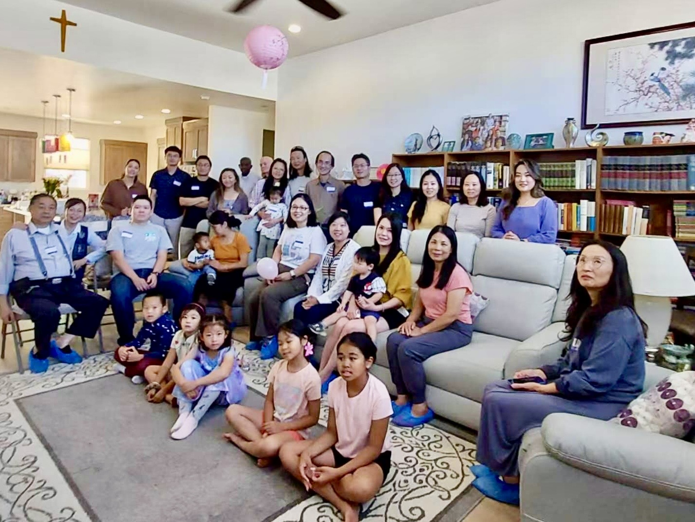
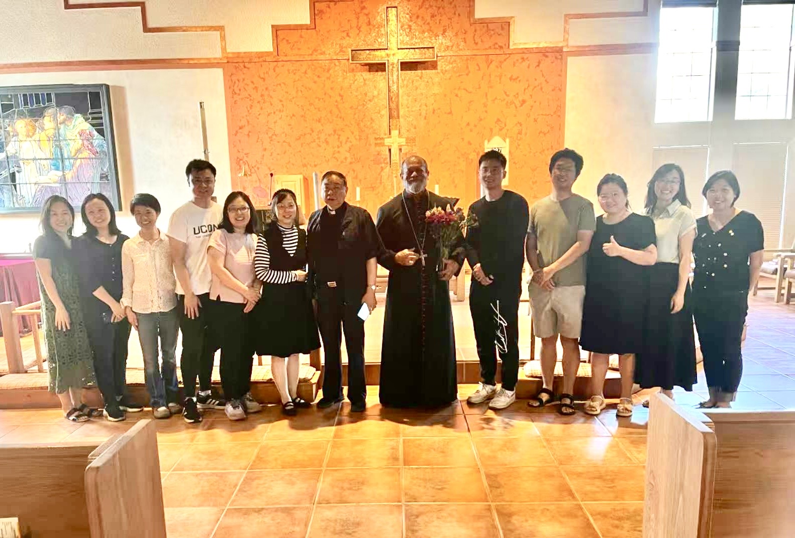

Southern Utah Chinese Christian Fellowship (SUCCF)
南犹他华人基督团契
We are a group of Chinese Christians living in Southern Utah. Some of us came here for work, some for school, and others relocated with our families. No matter the reason, we share a common desire: to connect in Chinese, grow in our faith, and build one another up in Christ.
In recent years, the Chinese community in this area has grown significantly, and with it, the number of Christians has increased as well. In the summer of 2025, driven by a shared spiritual need, more than a dozen believers began gathering together to study the Bible and pray as a fellowship.
Since then, we have hosted Thanksgiving gatherings and special Lunar New Year events, each drawing nearly a hundred attendees.
Our vision is to establish a Chinese Christian church in Southern Utah — a spiritual home that serves the local Chinese community and warmly welcomes Chinese students who come here to study.


We believe that the Scriptures, both Old and New Testaments, is the inspired Word of God, without error in the original writings, the complete revelation of His Will for the salvation of men, and the divine and final authority for all Christian faith and life.
2 Timothy 3:16-17; 2 Peter 1:21; Psalms 119:89, 105; John 10:35; 12:47-48; Revelation 22:18-19
We believe in one God, the Father Almighty who is the creator and supreme ruler of the universe, the heavens, the earth, and all the things therein; and who eternally exists in three persons: Father, Son, and the Holy Spirit, each having his particular part in the work of our salvation.
Deuteronomy 6:4; Isaiah 44:6; Genesis 1:1; Psalms 103:19; Matthew 3:16-17, 28:19; 2 Corinthians 13:14; Ephesians 1:3-14
We believe that Jesus Christ is true God and true man (yet sinless), the Son of God, begotten, not made, being of one substance with the Father. He was conceived by the Holy Spirit and born of the Virgin Mary. He came to this world to make God known to men. He was crucified for our iniquities, was buried, and on the third day arose bodily from the dead. He ascended into heaven, and is now our High Priest and Advocate at the right hand of the Majesty on high. He shall return imminently and personally with glory to judge both the living and the dead.
Matthew 1:18, 22-23; John 1:1-14, 14:1-3; Romans 1:2-4; Acts 1:11; 1 Corinthians 15:1-4; Ephesians 1:20; Philippians 2:5-7; 1 Thessalonians 4:14-17; 1 Peter 1:18-19; 1 John 2:1; Hebrews 4:14, 7:22-25, 8:1; Revelation 1:7
We believe in the Holy Spirit, the third person of the Trinity, who is of one substance equal in power and glory with the Son. His ministry is to glorify the Lord Jesus Christ, and during this age to convict men of guilt in regard to sin, righteousness and judgment, regenerate the believing sinners, and to indwell, guide, instruct and to empower believers for godly living and service.
2 Corinthians 3:17-18; John 16:8-13; Titus 3:5; Romans 8:9; Acts 1:8
We believe that men were created in the image and likeness of God, but in Adam all men have fallen into sin, and as sinners men are in need of God's salvation.
Genesis 1:26-28; Isaiah 53:6; Romans 1:18-3:23; 5:12, 18, 19; John 3:3, 5, 7
We believe in salvation and justification through faith in Jesus Christ. All who receive Him by faith as Savior and Lord are justified wholly on the ground of His shed blood and are born anew of the Holy Spirit, become the children of God, into the family of God, and brought into the kingdom of His Son and sealed with the Holy Spirit.
John 1:12-13, 3:3,5,7,16-18; Acts 4:12; Romans 3:24, 5:8, 6:23; Ephesians 2:8-9; Titus 3:5; Colossians 1:13; 1 John 5:12
We believe that there shall be a bodily resurrection of the just to eternal life, and of the unjust to eternal punishment.
Matthew 25:31-46; John 5:29; 1 Corinthians 15:35-54; Revelation 20:15; 21:1-5
We believe that the universal church is one body, of which Jesus Christ is the head, and is composed of all who are regenerated by the Holy Spirit. The duty of the Church is to proclaim through word and deeds, the gospel of salvation to the world, and to nurture the spiritual growth of members through prayer, teaching, fellowship, and worship.
Ephesians 1:22-23, 2:19-22; Colossians 1:18; Matthew 28:19-20; Acts 1:8, 2:42
We believe that water baptism and the Lord's supper are ordinances to be observed by the believers of the Church during the present age as testimonies before God and men.
Matthew 28:18-19; Romans 6:1-4; 1 Corinthians 11:23-26